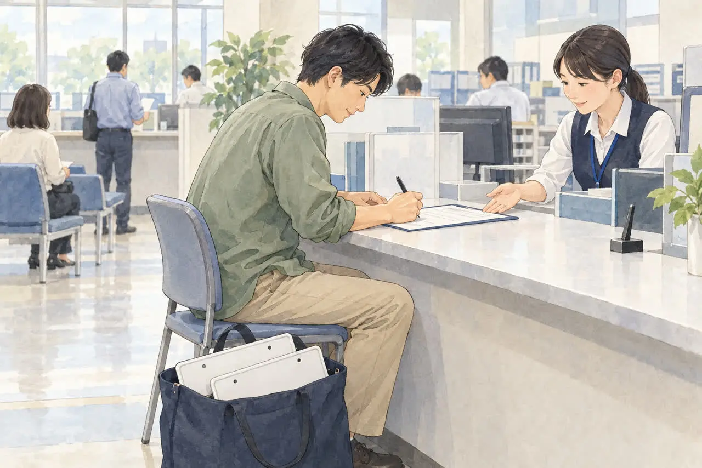

自分で廃車手続きをしたい方へ
廃車は自分でできる？
自分で手続きするか、業者に頼むかの選び方
公開
こんにちは、東京都足立区江北で自動車解体・廃車買取をしている「大崎商店 環七店」です。
「廃車の手続きは、自分でもできるの？」
「業者に頼むと、何が違うの？」
「自分でやったほうが、安くなる？」
廃車の手続きは、書類がそろっていれば、ご自身で窓口に行って行うこともできます。 ただし、車の解体には許可が必要で、通常は解体業者へ依頼します。 また、窓口が開いているのは平日の日中だけです。
この記事では、自分で手続きする場合と、業者に頼む場合の違いと、どちらを選ぶかの目安を、やさしくご紹介します。後半では、足立区の大崎商店の場合もご紹介します。
① 自分でできること・できないこと

廃車の手続きには、大きく3つの作業があります。
| 作業 | ご自身で | 業者に頼む場合 |
|---|---|---|
| 窓口での手続き（普通車の一時抹消・永久抹消・解体届出、軽自動車の返納等） | できます（代理申請では、普通車は委任状、軽自動車は申請依頼書などが必要） | 代行の範囲を確認します |
| 車の解体 | 許可なく行うことはできません（登録された引取業者へ引き渡し、許可を受けた解体業者が処理します） | 自社または提携する解体業者が処理します |
| 車の運搬 | 車検・自賠責・ナンバーなどの条件を満たせば自走、それ以外は積載車などを手配します | 引き取りの可否・方法を確認します |
つまり、書類の申請や運搬の手配は自分でもできますが、解体は許可を受けた業者に任せます。 解体を理由とする永久抹消登録・解体届出は、引取業者等から解体報告の連絡を受けたあとに行います。一時抹消は、車を解体せずに使用を中止する手続きです。
くわしくは、「一時抹消」と「永久抹消」の違いをやさしく解説｜廃車はどちらを選ぶ？の記事をご覧ください。
② 自分で手続きするときの流れと、手間

普通車を一時抹消する場合（申請先は、車検証に記録された使用の本拠の位置を管轄する運輸支局・自動車検査登録事務所）
1. 必要書類を用意する：車検証、ナンバープレート（前後2枚）、所有者の印鑑登録証明書（発行から3か月以内）、実印など
2. 車の保管場所・運搬方法を決め、ナンバープレートを取り外す。外した車で窓口まで運転して行くことはできません
3. 平日の日中に、窓口へ行く：足立区の場合は、足立自動車検査登録事務所（足立区南花畑）です。登録部門の受付は、8:45〜11:45、13:00〜16:00で、終了の30分前までを目安に、余裕を持って来庁しましょう（東京運輸支局の案内）
4. 申請書を書いて、提出する（一時抹消は、手数料を印紙で納めます）
手続きに伴う自動車税の申告も、税の窓口で確認してください。解体を理由とする永久抹消は、先に登録された引取業者へ車を引き渡し、解体報告の連絡を受けてから申請します。一時抹消済みの車の解体届出では、車検証・ナンバープレートの代わりに登録識別情報等通知書などを使い、必要書類が異なります。 解体に関する申請では、移動報告番号・解体報告記録日も確認しましょう。
軽自動車の場合（申請先は、使用の本拠の位置を管轄する軽自動車検査協会の事務所・支所）
- 必要なものは、車検証の原本とナンバープレートなどです。足立区の場合は、東京主管事務所の足立支所（足立区宮城）で、受付は、8:45〜11:45、13:00〜16:00です
- 一時使用中止と解体返納では申請書が異なります。解体返納は、引取業者から解体報告の連絡を受けてから申請します。代理申請は申請依頼書、所有者が販売店・ローン会社などの場合は事前の同意が必要です。返納済みの車の解体届出は、別の必要書類を確認してください
- 軽自動車税の申告も、隣接する税の窓口等で確認します
どちらも、土日・祝日は閉まっています。 窓口までの移動や待ち時間、書類の記入を考えると、半日ほどの時間がかかることがあります。
3月、とくに年度末の窓口は大変混みます。 書類の不足で再訪問にならないよう、早めに準備しましょう。ここでの取り外しは、自分で申請する場合の説明です。業者へ自走で持ち込む場合は、ナンバーを付けたまま、取り外し方法を依頼先へ確認してください。
細かい必要書類は、廃車に必要な書類チェックリスト（普通車）、軽自動車の廃車に必要な書類・準備チェックリストの記事をご覧ください。
③ 費用の違い
普通車の申請手数料は、次のとおりです（国土交通省・2026年4月の手数料改定資料、北陸信越運輸局・永久抹消登録、解体届出）。
| 手続き | 普通車の登録手数料 |
|---|---|
| 一時抹消登録 | 窓口500円／OSS（オンライン）450円 |
| 永久抹消登録・解体届出 | 無料 |
※軽自動車は、解体返納は無料、一時使用中止で自動車検査証返納証明書の交付を受ける場合は450円です。名義変更などを同時に行う場合は別途費用が生じることがあります。OSSは申請条件を確認してください。手数料は改定されることがあるため、手続きの前に確認してください。
自分で手続きする場合の主な費用は、この手数料と、書類の取得費（印鑑登録証明書など）、窓口までの交通費です。ただし、車の解体や運搬の費用は、別にかかる場合があります。 業者に頼む場合は、手続きの代行費用・解体費用・引き取り費用がどう扱われるかが、依頼先によって異なります。
「自分でやれば、安くなる」とは限りません。 解体や運搬を別の業者に頼むと、トータルでは変わらない、またはかかる手間が増えることもあります。依頼先に、費用の内訳と、総額を確認しましょう。
④ どちらがよいか？選び方の目安
自分で手続きしやすい人
- 車の所有者が、ご自身になっている
- 車検証の住所・氏名と、今の住所・氏名が同じ
- 平日の日中に、窓口へ行ける
- ナンバープレートを、自分で外せる
- 書類を、自分で調べて用意できる
業者に頼んだほうがよい人
- 車が、動かない、車検が切れている（運搬が必要）
- 車を解体してほしい（解体は、業者が必要）
- 所有者が別の人（ローン会社、家族、亡くなった方など）
- 車検証の住所・氏名が変わっている（追加の書類が必要）
- 平日に窓口へ行けない、手続きに自信がない
- 還付金や、自賠責保険の手続きも任せたい（対応範囲を依頼先に確認。任意保険は契約先へ相談）
迷うときは、車の状態と、ご自身の予定を、依頼先に伝えて相談しましょう。
住所・氏名が変わっている場合は、車検証と今の住所・名前が違う場合の廃車手続きの記事を、名義が別の人の場合は、名義が家族・知人のままの車を廃車したいの記事をご覧ください。
自分で手続きをする場合の委任状・譲渡証明書については、「廃車の委任状・譲渡証明書の書き方」の記事をご覧ください。
⑤ 自分で手続きしても、残る作業
一時抹消を先にした場合は、車の運搬や、その後に解体するなら解体業者への引き渡し・解体届出が残ります。解体を理由とする永久抹消は、解体報告のあとに行うため、申請後に解体する順序ではありません。
- 車の解体・処分：解体する場合は、登録された引取業者へ引き渡します。一時抹消した車を保管して再び使う場合は、解体する必要はありません
- 車の運搬：一時抹消などの手続きをしたあとの車は、そのまま公道を走れません。通常は積載車などで運びます
- 自賠責保険・任意保険の手続き：廃車だけでは自動で解約されません
- 税金の還付の確認：普通車の自動車税は、還付が発生すれば通知などで受け取り方法を確認します。軽自動車税には月割り還付がありません。重量税は、適正に解体し、制度上の車検残存期間が1か月以上ある場合などに、永久抹消・解体届出等と同時に還付申請が必要です
くわしくは、廃車にするとお金は戻ってくる？還付金のこと、事故を起こしたときの保険の使い方の記事をご覧ください。
⑥ 乗らなくなった車を、放置していませんか？
車検が切れて、そのまま置いてある車はありませんか。車検切れや使用していないことだけでは、自動車税・軽自動車税の課税は止まりません。 原則として、毎年4月1日時点の所有者等に課税されます。普通車は抹消登録、軽自動車は一時使用中止・解体返納などの適切な手続きと税の申告が必要です（東京都主税局・足立区・軽自動車税）。
ナンバープレートを外しただけでは、税金は止まりません。 「自分で手続きするのは大変そう」と後回しにしている間も、税金だけがかかり続けることがあります。
- 税金の仕組みは、3月中に廃車した方がいい理由の記事をご覧ください
- 車検が切れた車の廃車は、車検切れの車は公道を走れない。どうやって廃車にする？の記事をご覧ください
よくある質問
Q. 廃車の手続きは、誰でも自分でできますか？
A. ご自身で申請できますが、手続きの種類と名義を確認しましょう。代理申請では、普通車は委任状、軽自動車は申請依頼書などが必要です。販売店・ローン会社などが所有者の場合は事前に同意を得る必要があります。相続や住所・氏名の変更がある場合も、必要書類を窓口へ確認してください。
Q. 自分で手続きすれば、必ず安くなりますか？
A. 必ずしも、そうとは限りません。窓口の手数料は少額ですが、解体や運搬の費用が別にかかる場合があります。総額を、依頼先に確認しましょう。
Q. 車の解体も、自分でできますか？
A. 許可なく行うことはできません。使用済自動車は登録された引取業者へ引き渡し、許可を受けた解体業者が処理します。個人の部品取りでも、解体業の許可が必要です（環境省・自動車リサイクル法Q&A）。
Q. 平日に仕事で、窓口へ行けません。
A. 窓口は、平日の日中だけです。普通車の委任状、軽自動車の申請依頼書などを用意して、代理人に依頼する方法もあります。必要書類と代行の範囲を確認しましょう。
Q. 先に一時抹消だけ、自分でしてもいいですか？
A. できます。ただし、一時抹消のあとに解体する場合は、解体後に、解体届出が必要です。くわしくは、一時抹消と永久抹消の違いの記事をご覧ください。
大崎商店の場合：自分で手続きするか、お任せいただくか
ここからは、足立区の大崎商店の場合をご紹介します。
大崎商店では、車の引き取り・買取にともなって、一時抹消も永久抹消も手続きしています。書類手続きだけの代行のご依頼は、お受けしていません。
- 手続きの日数：一時抹消は、必要書類がそろっていれば、原則、引き取りから1週間以内が目安です（早ければ、当日か翌日になることもあります）。永久抹消は、入谷店の作業状況によって変わります
- ナンバープレート：一時抹消・永久抹消の手続きのタイミングで、当店が外して、窓口へ提出しに行きます。お客様が外す必要はありません
- 窓口までの時間：環七店から、足立自動車検査登録事務所（普通車）までは車で約20分、軽自動車検査協会の足立支所までは約15分が目安です。窓口の受付時間に合わせて、手続きを進めます
- 還付金・返戻金：車にまつわる権利は、買取価格に含めて、当店にお任せいただく形が、ほとんどです。含めた分は当店が受け取る扱いで、お客様に同額が別途支払われるわけではありません。必要な委任・記入等をご案内します。任意保険は契約先へご相談ください
- 書類・完了の連絡が必要な方：ご依頼時にお申し出ください。抹消の証明（コピー、または原本）は、手続き完了後にお渡し・お送りできます。相手方の期限に間に合う保証はないため、期限もお知らせください。車の権利を当店へ移した場合は通常、完了連絡は行いませんが、ご希望には対応できます
- ご自身で一時抹消などの手続きをされた車：手続きのあとの車は、自走できません。車検切れの車と同じ扱いで、当店が引き取りに伺います。先に、お電話でご相談ください
- 車検が切れたまま、置いてある車：車検切れだけでは税金は止まりません。ナンバーを外すだけでなく、廃車の手続きが必要です。お早めにご相談ください
大崎商店では、
- 解体費用・手続き代行費用・印紙代は別請求しません
- 足立区内は、引き取り無料
- 足立区外も、買取価格がつかない車は、環七店から片道約30分圏内は引き取り無料
- 買取価格がつく車は、圏外でも、所在地と車の状態によっては無料で引き取り（事前にご案内します）
- 車のお持ち込みは、どこからでも歓迎（基本は環七店。日時は、事前にお電話でご相談ください）
${SHOPS_TITLE}
電話で相談する 03-3854-4141メールで相談する（フォーム）ご来店の前に、お電話ください。引き取りなどで外出していることもあり、お電話いただければ、受け入れの可否や、ご案内できる日時をお伝えできます。
大崎商店 環七店
電話：03-3854-4141
〒123-0872
東京都足立区江北7丁目1−3
営業時間：月〜土 10:00〜18:00
休業日：日曜・祝日
環七沿い／舎人ライナー
西新井大師西駅
大崎商店 入谷店
電話：03-3899-2837
〒121-0836
東京都足立区入谷7丁目5−11
営業時間：月〜土 9:30〜17:30
休業日：日曜・祝日・第2土曜
引き取りやご相談のお電話は、環七店がスムーズです。車検証（または自動車検査証記録事項）をお手元にご用意いただくと、ご案内がスムーズです。
※掲載のイラストはAIで作成したイメージです。実際の店舗・役所の窓口を撮影したものではありません。
参考：関東運輸局・足立自動車検査登録事務所／軽自動車検査協会・東京主管事務所足立支所／軽自動車検査協会・解体返納／国土交通省・2026年4月の手数料改定資料／北陸信越運輸局・永久抹消登録、解体届出／東北運輸局・一時抹消登録／東京運輸支局・検査登録の受付時間